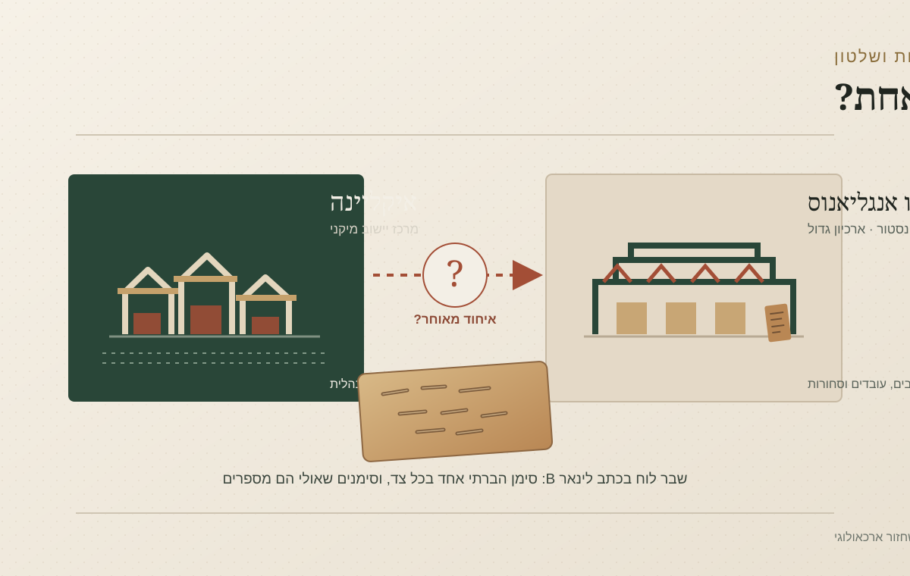

ארכאולוגיה · היסטוריה פוליטית · כתב ומנהל
השבר שהקדים את הארמון: מי שלט לפני ממלכת פילוס?
לוחית חרס זעירה בכתב לינאר B שנמצאה באיקליינה שבדרום־מערב יוון מצטרפת לעדויות שלפיהן ממלכת פילוס לא בהכרח נולדה סביב ארמון יחיד. ייתכן שהיא צמחה מתוך איחוד מאוחר של כמה מרכזי כוח — והכתב המנהלי הוא אחד הרמזים לכך.

כדי לספר את לידתה של מדינה, אנחנו נוטים לחפש את המקום שבו הכוח נעשה גלוי: ארמון, חומה, קבר מלכותי, אולם שבו התקבלו החלטות. בדרום־מערב יוון, באתר המכונה איקליינה, נמצא בשנים האחרונות רמז מסוג אחר. הוא אינו פסל של שליט ואינו כתובת ניצחון. זהו שבר חרס קטן, בגובה של כ־1.3 סנטימטרים, שעליו נותרו סימני כתב משני צדדיו. שבר כזה אינו יכול לספר לנו מי ישב על כס המלוכה, אבל הוא עשוי ללמד שמישהו במקום הזה ניהל רישום — ואולי עשה זאת עוד לפני שהמרכז השכן, ארמון נסטור, נעשה לב לבה של ממלכת פילוס.
השבר התגלה בעונת החפירות של 2025, אך הסיפור הגיע לכותרות רק בנובמבר 2026, כאשר הארכאולוג מיכאל קוסמופולוס הציג את הממצא בהרצאה במוזיאון הארכאולוגי הלאומי באתונה. לפי הדיווח של אוניברסיטת מיזורי–סנט לואיס, זהו לוח החרס השני בכתב לינאר B שנמצא באיקליינה; הראשון התגלה שם ב־2010. דו״ח החפירה של 2025 מוסיף פרט מסקרן: לפי מסקנת החוקרים, העדויות לקיומו של ארכיון באיקליינה קדומות בכ־150 שנה מן הארכיון המוכר מאנו אנגליאנוס, המקום שבו ניצב ארמון נסטור. אבל חשוב לדייק כבר עכשיו: הלוחית החדשה אינה מפוענחת, והיא אינה מוכיחה כשלעצמה שאיקליינה הייתה מדינה עצמאית. חשיבותה נובעת מן ההקשר שבו נמצאה ומן השאלות שהיא מחזקת.
מה בדיוק נמצא מתחת לרצפה?
איקליינה שוכנת במסניה, בחלקו הדרום־מערבי של חצי האי הפלופונס. האתר נמצא סמוך לכפר המודרני הנושא את אותו שם, וכארבעה־עשר קילומטרים מצפון־מזרח לעיירה פילוס. החפירות מתנהלות בו במשך שנים בחסות החברה הארכאולוגית של אתונה. לפי רשות העתיקות של מסניה, היישוב התקיים כבר באלף השני לפני הספירה, ושגשג בקירוב בין 1550 ל־1250 לפנה״ס. הוא לא היה כפר פשוט: נחשפו בו מבנים מונומנטליים, בתי מלאכה, מחסנים, בתים, רחובות מרוצפים, כיכרות, מרכז פולחני, מערכת ניקוז ואספקת מים. אחד המבנים הגדולים, שכונה ״מתחם המרפסת הקיקלופית״, היה כנראה בן שתיים או שלוש קומות ועוטר בציורי קיר.
הלוחית החדשה נמצאה בחדר המכונה Γ3, בתוך מבנה שנקרא מגרון Γ. הארכאולוגים ניקו שם שכבה מן התקופה ההלדית המאוחרת IIIA2, מתחת לרצפה מאוחרת יותר מן התקופה IIIB. המילוי כיסה שרידים של חמישה קירות, שככל הנראה השתייכו לשני מבנים קדומים יותר. יחד עם שבר הלוח נמצאו במילוי כלי חרס, פיסת עלה זהב, פלך אבן וראש מסמר. הדו״ח מציין שהלוחית נושאת כתובת משני צדדיה: על כל צד נשמר סימן הברתי אחד, ולצדם סימנים נוספים שאולי הם ספרות. זה כל מה שאפשר לקרוא בשלב זה. אין די חומר כדי לקבוע אם מדובר ברשימת עובדים, בחשבון של סחורות, ברישום של הקצאה או במסמך מסוג אחר.
הפרט החשוב בדו״ח אינו רק הלוחית, אלא רצף השכבות. בעונת 2025 זוהו באיקליינה שתי תקופות יישוב מובחנות: בשלב הקדום המבנים היו מרוחקים יותר זה מזה; בשלב המאוחר היישוב נעשה צפוף יותר, ונבנו בו מבנים רבים ומערכות ניקוז נוספות. בין שתי התקופות מפרידה שכבת חורבן עבה, בעובי של כארבעים סנטימטרים, ובה אדמה שרופה, כלי חרס שנשרפו בחלקם, לבנים ועצמות בעלי חיים. החוקרים מציינים שהחורבן הקדום עשוי להיות בן אותו זמן שבו נהרסו גם מתחם המרפסת הקיקלופית ומבנים מונומנטליים אחרים. הסיבה לחורבן אינה ידועה. אין בסיס לקבוע שמדובר בכיבוש, במלחמה או במרד; אלה אפשרויות, לא ממצאים.
דו״ח עונת החפירות פורסם במסגרת Archaeology in Greece Online, מאגר הדיווחים הארכאולוגיים על חפירות ביוון. הודעת אוניברסיטת מיזורי–סנט לואיס מ־13 בנובמבר 2026 מסרה את פרטי ההצגה הפומבית והציבה את הממצא בתוך הדיון על היווצרות ממלכת פילוס. המאגר עצמו מדגיש שהכללת חומר בו אינה מהווה פרסום מדעי פורמלי של הממצא; לכן יש לראות בפרטי הלוחית דיווח חפירה ראשוני, עד שיתפרסם מחקר מלא שיציג את ההקשר, התיעוד והדיון האפיגרפי.
כתב של פקידים, לא של משוררים
הכתב שעל הלוחית נקרא לינאר B. זהו כתב הברתי, כלומר סימניו מייצגים בדרך כלל צירופים של עיצור ותנועה ולא אותיות בודדות כמו באלפבית העברי או היווני המודרני. הוא שימש לכתיבת צורה קדומה של יוונית, אך במשך זמן רב איש לא ידע זאת. הפענוח המקובל התגבש ב־1952, כאשר מייקל ונטריס, אדריכל בריטי שהתעניין בכתבים האגאיים, הצליח לזהות את השפה כיוונית. הבלשן ג׳ון צ׳דוויק הצטרף אליו, והשניים פרסמו את עבודתם המשותפת ב־1953. התכתובת המקורית ביניהם, השמורה בפקולטה לקלאסיקה באוניברסיטת קיימברידג׳, מלמדת כיצד הפענוח נבנה בהדרגה מתוך השוואת סימנים, שמות מקומות ומילים שחזרו בטבלאות.
העובדה שהכתב הוא יוונית קדומה אינה הופכת את הלוחות לספרות. רוב מסמכי הלינאר B המוכרים לנו הם רשומות מנהליות: מלאי של תבואה, שמן ויין; בעלי חיים; כלי נשק ומרכבות; עובדים; הקצאות של חומרי גלם; מוצרים שהובאו למחסנים או יצאו מהם; ולעיתים גם מנחות לאלים. הלוח אינו מספר את סיפורו של אדם, אלא מקבע יחידה של מידע שהמנהל צריך לזכור. הוא קרוב יותר לפתק חשבונאי או לטופס מלאי מאשר ליצירה ספרותית.
יש כאן גם אירוניה ארכאולוגית. לוחות החרס המיקניים לא נועדו בהכרח להישמר אלפי שנים. הם יובשו לשימוש, ולא תמיד נשרפו בכבשן כמו כלי חרס. חלק גדול מן הלוחות שהתגלו בארמון נסטור התקשה במקרה בשרפה שהחריבה את המבנה בראשית המאה השתים־עשרה לפנה״ס. האסון הפך מסמכים זמניים לארכיון שנשמר עד ימינו. לכן התמונה ההיסטורית שלנו מוטה: אנחנו קוראים את מה שנשאר אחרי חורבן, לא את כל מה שנכתב, נשמר, הועבר או הושלך בחיי היום־יום. ההוצאה המחקרית של כתבי ארמון נסטור, שפורסמה בשני כרכים פתוחים ב־2025, מציגה יותר מאלף וחמש מאות מסמכים ושרידים בכתב לינאר B — אך גם האוסף הגדול הזה הוא תמונת מצב חלקית של מערכת מנהלית ברגע מסוים.
המשמעות של לוחית מאיקליינה היא אפוא רחבה מן המילים שאולי נכתבו עליה. אם רישום מנהלי נעשה במקום שאינו ארמון נסטור, עולה שאלה על מיקומה של הסמכות: האם פקידים מקומיים ניהלו חשבונות בשם שלטון מרכזי? האם מדובר במוסד של ישות מדינית עצמאית? או שמא אנחנו רואים שלב מוקדם שבו כמה מרכזים החזיקו מערכות מנהליות דומות, לפני שאחד מהם השתלט על האחרים?
לפני שהיה ארמון אחד, אולי היו שניים
כדי להבין מדוע השאלה הזאת חשובה, צריך להכיר את ארמון נסטור. הארמון ניצב באתר אנו אנגליאנוס, סמוך לפילוס המודרנית, והוא אחד האתרים המיקניים השמורים ביותר ביוון היבשתית. בחפירות שנערכו בו מאז 1939 התגלו חדרי ארכיון ובהם אלפי לוחות ושברים בכתב לינאר B. הרשומות מאפשרות לשחזר חלקים מן הכלכלה, מן הפולחן ומן הארגון הפוליטי של הממלכה. במשך זמן רב היה טבעי להסיק מן הארכיון הגדול שהארמון היה מרכז השלטון באזור, ושיישובים אחרים פעלו כחלק ממערכת מנהלית שכבר התגבשה סביבו.
אלא שהממצאים באיקליינה מקשים על הסיפור הפשוט הזה. כבר ב־2006 הציע קוסמופולוס לראות באתר מרכז מחוזי חשוב בתוך ממלכת פילוס, אולי המקום שנזכר בלוחות הארמון בשם a-pu₂. המחקר הציג היררכיה של יישובים: הארמון באנו אנגליאנוס בראש, איקליינה כמרכז מחוזי, יישובים קטנים יותר ככפרים חקלאיים, ואתרים מצומצמים ששימשו אולי מתקנים חקלאיים או מוקדי פעילות מוגבלים. זו הייתה תמונה של מדינה היררכית, שבה איקליינה חשובה — אך כפופה למרכז גדול ממנה.
במאמר שפרסם ב־2019 בכתב העת American Journal of Archaeology, הציע קוסמופולוס מודל שונה. לפי הניתוח הזה, איקליינה ואנו אנגליאנוס לא היו בהכרח מרכז ומחוז במשך רוב התקופה המיקנית, אלא שני מרכזי כוח שפעלו במסלולים מקבילים. כל אחד מהם עשוי היה לעמוד בראש ישות מדינית קטנה משלו. רק בשלב מאוחר יחסית של התקופה ההלדית המאוחרת IIIB, כך לפי ההצעה, התאחד האזור תחת ממלכת פילוס. המודל מסביר מדוע נמצאו באיקליינה מבני ציבור, תשתיות ומסמכים מנהליים, ומדוע יש סימנים לכפילות של מוסדות מנהליים במרחב הפילוסי.
השינוי בין שני המחקרים אינו בהכרח סתירה פשוטה. ב־2006 היה בסיס לזהות את איקליינה כמרכז מחוזי; ב־2019 נוספו נתונים ארכאולוגיים שאפשרו להציע שההיררכיה הזאת עצמה נוצרה רק לאחר תקופה שבה התקיימו כמה מרכזי כוח. במילים אחרות, ייתכן שהיישוב שהיה מאוחר יותר מחוז בממלכה היה קודם לכן מרכז עצמאי. דו״ח החפירה החדש מחזק את האפשרות הזאת משום שהוא מצביע על עדויות מנהליות באיקליינה שקדמו בכ־150 שנה לארכיון המוכר מאנו אנגליאנוס. זהו שינוי חשוב בשאלת הסדר הכרונולוגי, אבל הוא עדיין אינו מכריע לבדו את שאלת הריבונות.
גם הלוחית הראשונה, שהתגלתה באיקליינה ב־2010, מסייעת להבין את הרצף. בהודעה שפרסמו קוסמופולוס והחוקרת סינתיה שלמרדיין ב־2011 הוסבר כי היא נמצאה בבור פסולת שרוף, ובו כלי חרס שתוארכו לתקופה מוקדמת יחסית. בצד אחד השתמר כנראה שם של אדם ואחריו המספר 1; בצד השני נותרה סיומת של פועל, שאפשר לקשור אולי לייצור. החוקרים העלו בזהירות את האפשרות שמדובר ברשימת כוח אדם ובמונח הקשור למלאכה. הם הדגישו שהמסמך עשוי להעיד על חשבונאות עצמאית לפני השתלטות פילוס, או על שלב מוקדם מאוד של הביורוקרטיה הממלכתית. גם כאן, המילים ״ייתכן״ ו״אפשר״ חשובות לא פחות מן הפענוח עצמו.
מה לוחית אחת אינה יכולה להוכיח
קל להתפתות לכותרת שלפיה נמצא מסמך המוכיח שאיקליינה הייתה ממלכה עצמאית. אבל זה יהיה ניסוח חזק מדי. השבר החדש קטן מכדי לזהות את תוכנו. סימן הברתי אחד בכל צד אינו מגלה לנו מי כתב, למי נכתב, מה נרשם או מי היה מוסמך להורות על הרישום. גם העובדה שמסמכים מנהליים נמצאו במקום אינה מוכיחה עצמאות מדינית: שלטון מרכזי יכול להפעיל פקידים ומחסנים ביישובים מרוחקים, ולהעניק להם סמכות מקומית רחבה בלי לוותר על ריבונותו.
יש גם בעיית עצמאות מחקרית. דו״ח עונת 2025 וההודעה האוניברסיטאית מ־2026 נשענים על עבודת צוות החפירה ועל פרשנותו של קוסמופולוס. המאמר מ־2019, שבו הוצע מודל שתי הישויות המדיניות, נכתב אף הוא בידי אותו חוקר. אין בכך פגם: הארכאולוג שמכיר את האתר לעומק הוא לעיתים האדם המתאים ביותר לפרש את ממצאיו. אבל צריך להבחין בין שלוש רמות שונות של ודאות: עצם מציאת הלוחית והקשר השכבות שלה; העובדה שהאתר החזיק פעילות מנהלית; והטענה ההיסטורית שאיקליינה הייתה מדינה עצמאית לפני איחודה בפילוס. שתי הראשונות נשענות על ממצאים ישירים. השלישית היא מודל שמנסה להסביר אותם, וראוי שייבחן מול ממצאים נוספים.
גם שכבת החורבן אינה פותרת את החידה. היא מלמדת שמבנים נהרסו ושלאחר מכן השתנה דפוס היישוב, אך אינה מספרת אם ההרס נגרם ממלחמה, רעידת אדמה, שרפה מקרית או שילוב של תהליכים. כדי לטעון שאיקליינה נכבשה בידי פילוס צריך ראיות ממוקדות יותר: שינוי ברור במנהגים חומריים, עדויות להרס אלים, שינוי במערך המנהלי או תיעוד שמחבר את האתר לשלטון החדש. נכון לעכשיו, המודל של סיפוח או איחוד מאוחר הוא אפשרות מחקרית סבירה, לא סיפור שהארכאולוגיה כבר סגרה.
הזהירות הזאת אינה מחלישה את הגילוי. להפך: היא מבהירה מהו ההישג האמיתי שלו. הממצא אינו מספק לנו תשובה מוכנה על זהות המלך או על גבולות הממלכה; הוא מאלץ אותנו לשאול אם המושג ״ממלכת פילוס״ מסתיר היסטוריה ארוכה יותר של משא ומתן, תחרות, שיתוף פעולה והשתלטות בין מרכזים אזוריים. ייתכן שהמדינה לא הופיעה ביום שבו הוקם הארמון הגדול, אלא נבנתה בהדרגה מתוך מוסדות מקומיים שכבר ידעו למדוד, לרשום, לאחסן ולחלק משאבים.
הארכיון אינו המדינה
יש הבדל בין היכולת לנהל חשבון לבין היכולת לשלוט. חשבון מעיד על שגרה מוסדית: מישהו צריך לדעת כמה חומר גלם הגיע, כמה עובדים הוקצו, מי קיבל מנת מזון ומה נשאר במחסן. אבל אותה שגרה יכולה להתקיים בכפר עשיר, במרכז פולחני, בחצר של שליט מקומי או במערכת מנהלית של ממלכה רחבה. כדי להבין מדינה, צריך לחבר את הכתב לאדריכלות, לתשתיות, לכלכלה, למרחב וליחסי הכוח בין יישובים.
איקליינה מעניינת משום שהחיבור הזה מתחיל להיווצר. יש בה מבנים מונומנטליים, תשתיות מים וניקוז, בתי מלאכה, מחסנים, ציורי קיר ועדויות לכתיבה מנהלית. אין כאן רק לוחית בודדת שנפלה במקרה ליד בית מגורים. יש אתר שלם שהארגון הפיזי שלו מעיד על יכולת לרכז עבודה, חומרים וידע. אם אכן התקיימו בו מוסדות שלטון מקומיים לפני עליית ממלכת פילוס, הרי שהאיחוד המאוחר לא יצר את המנהל יש מאין; הוא השתלט על מערכות שכבר פעלו.
הסיפור הזה גם משנה את האופן שבו אנחנו מדמיינים את ראשית הביורוקרטיה. אנחנו רגילים לחשוב על פקידות כעל תוצר של מדינה גדולה: קודם יש מלך, אחר כך פקידים. אבל ייתכן שבמקומות מסוימים התהליך היה מעגלי יותר. מרכז מקומי פיתח מנגנונים לניהול משאבים; המנגנונים אפשרו לו לצבור כוח; מרכזים אחרים התחרו בו או התאחדו איתו; ולבסוף נוצרה ממלכה רחבה יותר, שבתוכה נשמרו חלק מן המוסדות הישנים. הלוחית אינה מוכיחה את הרצף הזה, אך היא מתאימה לשאלה הזאת טוב יותר מן הסיפור שבו כל הסמכות יורדת מלמעלה, מארמון אחד אל הכפרים שסביבו.
מבחינה זו, שבר החרס מאיקליינה חשוב דווקא מפני שאיננו יודעים לקרוא אותו. הוא מזכיר לנו שהעבר אינו מורכב רק מטקסטים מפורשים וממלכים ששמותיהם נחרתו באבן. לעיתים ההיסטוריה הפוליטית נבנית מתוך עקבות של פעולות קטנות: סימן שנחרץ בחומר רך, שכבת מילוי מתחת לרצפה, מערכת ניקוז שעברה משלב אחד לאחר, או מחסן המעיד שמישהו היה צריך לנהל מלאי. כל אחד מן הפרטים האלה מוגבל; יחד הם עשויים לשנות את התמונה.
חמישה דברים שכדאי לזכור
- הלוחית החדשה נמצאה בעונת החפירות של 2025 באיקליינה, והוצגה לציבור בנובמבר 2026. היא נושאת סימן הברתי אחד בכל צד וסימנים נוספים שאולי הם מספרים.
- לינאר B הוא כתב הברתי ששימש לכתיבת יוונית מיקנית, ובעיקר לרישומים מנהליים ולא ליצירות ספרות.
- איקליינה הייתה יישוב גדול ומאורגן, ובו מבני ציבור, תשתיות, בתי מלאכה, מחסנים ועדויות לכתיבה.
- קוסמופולוס הציע כי איקליינה ואנו אנגליאנוס היו בעבר מרכזי כוח נפרדים, ורק מאוחר יותר התאחדו תחת ממלכת פילוס.
- הממצא מחזק את המודל הרב־מרכזי, אך אינו מוכיח לבדו עצמאות מדינית, כיבוש או את תוכנו של המסמך.
שלוש שאלות למחשבה
- האם קיומה של פקידות מקומית מעיד על עצמאות, או שאפשר לקיים מנהל מבוזר גם בתוך ממלכה ריכוזית?
- עד כמה ההיסטוריה שאנו כותבים תלויה במה שנשרף ונשמר במקרה, ולא במה שהיה נפוץ בחיי היום־יום?
- האם מדינה נוצרת כאשר שליט אחד משתלט על אחרים, או כאשר מוסדות מקומיים מתחברים למערכת גדולה מהם?
לקריאה נוספת
- IKLAINA — 2025, Archaeology in Greece Online — דו״ח החפירה המתאר את שכבת הממצא, הלוחית ושתי תקופות היישוב.
- University of Missouri–St. Louis, 13 November 2026 — הצגת הממצא החדש והפרשנות של מנהל החפירה.
- Michael B. Cosmopoulos, “State Formation in Greece: Iklaina and the Unification of Mycenaean Pylos” — המודל של שתי ישויות מדיניות שהתאחדו בשלב מאוחר.
- Michael B. Cosmopoulos, “The Political Landscape of Mycenaean States” — מחקר מוקדם יותר על איקליינה כמרכז מחוזי בממלכת פילוס.
- Ephorate of Antiquities of Messenia: Mycenaean settlement at Iklaina — תיאור רשמי של האתר, המבנים והתשתיות שנחשפו בו.
- Michael Cosmopoulos and Cynthia Shelmerdine, “More on the Iklaina tablet” — הודעת החוקרים מ־2011 על הלוחית הראשונה ועל גבולות הפענוח שלה.
- The Palace of Nestor at Pylos in Western Messenia, Vol. IV: Inscribed Documents — מהדורה מחקרית פתוחה של מסמכי הלינאר B שנמצאו בארמון נסטור.
- The Ventris–Chadwick Correspondence, University of Cambridge — מכתבים מקוריים המתעדים את שיתוף הפעולה בפענוח כתב לינאר B.